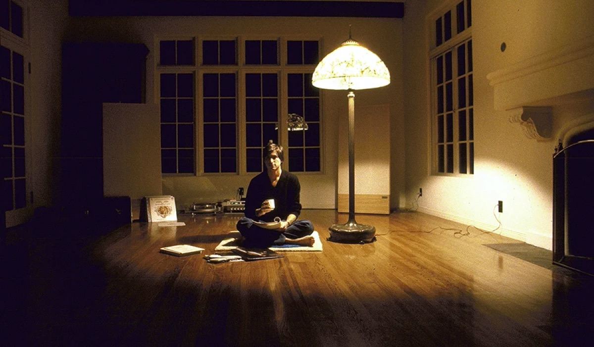

Vedic Astrology — Jyotish
Sidereal charts, divisional charts, Dasha timing
The things I keep returning to outside of work — sitting practice, the old systems for reading a life, and a long-running habit of looking at how things are put together.
Sitting practice, and the reading around it. It is the counterweight to work spent inside dashboards — a different way of paying attention.

You can’t connect the dots looking forward; you can only connect them looking backwards.
— Steve Jobs
Five systems, each with its own logic for the same question.
Sidereal charts, divisional charts, Dasha timing
Four Pillars: stems and branches, elemental balance, luck cycles
Twelve palaces, fourteen major stars, the four transformations
How a space is arranged, and what that arrangement does to the people in it
Time-and-direction charts for a specific question
Clothes as composition — silhouette, texture, restraint. The same eye I bring to a chart, pointed at something else.
Mostly light and interiors. Some of it ends up as reference for the generative work.
The generative image and motion work lives on its own page — Design & AIGC.